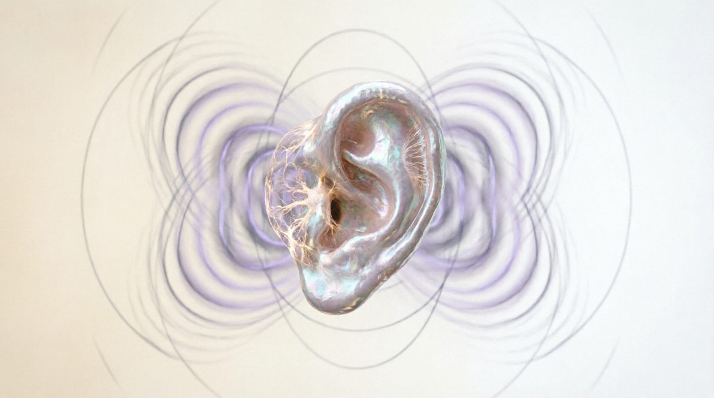
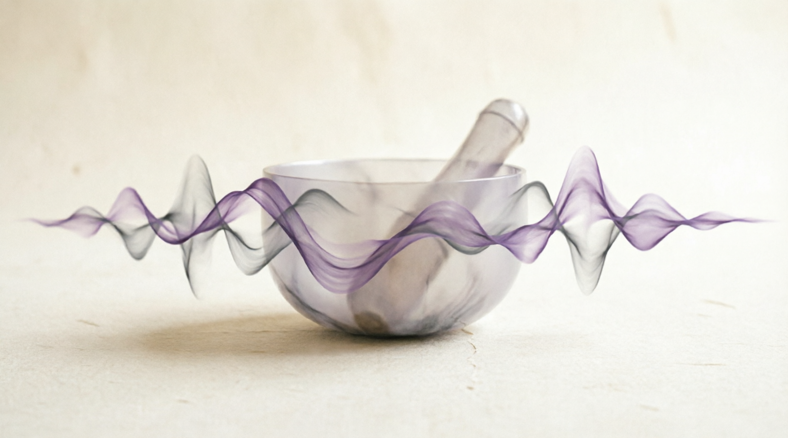
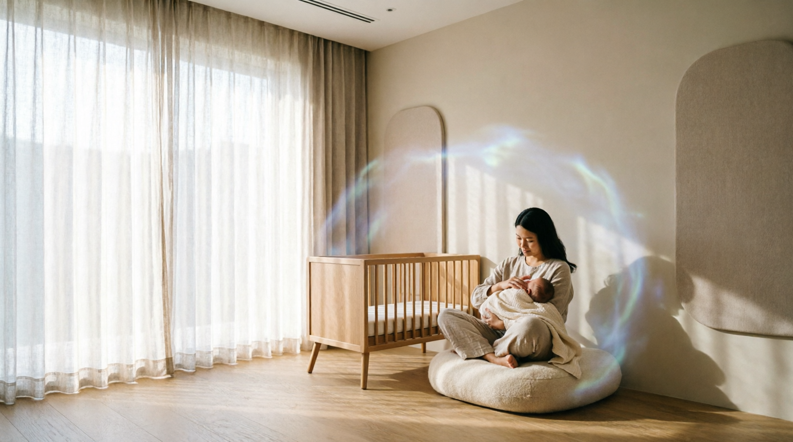

Феноменология звука: телесное и эмоциональное взаимодействие
Звуковое восприятие традиционно рассматривается в рамках акустической модели как последовательность стимулов, трансформируемых слуховой системой в нейронные импульсы. Однако феноменологический подход расширяет эту парадигму, трактуя звук не как дискретный раздражитель, а как иммерсивную среду, в которую погружено тело целиком (Ihde, 2007). В этом контексте слушание становится модальностью присутствия: звуковая волна проникает через кожу, костную ткань и внутренние полости, создавая ощущение пространственной охваченности. Такое восприятие не ограничивается слуховым анализатором — оно включает вибрационную чувствительность тактильных рецепторов и проприоцептивную реакцию мышечно-скелетной системы, формируя целостный соматический опыт, в котором граница между «внутри» и «вне» временно растворяется.
Вибрация выступает первичным языком телесного диалога со звуком, предшествующим семантической обработке. Низкочастотные колебания (20–100 Гц), минуя корковые структуры, напрямую модулируют активность вегетативной нервной системы через механорецепторы фасций и висцеральных оболочек (Cook et al., 2022). Кинестетический компонент звукового опыта проявляется в непроизвольных микродвижениях диафрагмы, изменении ритма дыхания и расслаблении паравертебральных мышц — реакциях, регистрируемых даже при отсутствии сознательного внимания к источнику звука. Эти данные указывают на существование до-когнитивного слоя восприятия, где тело «понимает» звук через резонанс собственных тканей, а не через интерпретацию мозгом.
Эмоциональная резонансность звука обусловлена не столько мелодической структурой, сколько спектральной плотностью и темпоральной организацией. Частоты в диапазоне 55–85 Гц, совпадающие с резонансом грудной клетки, активируют островковую кору и переднюю поясную извилину — зоны, ответственные за телесное осознание эмоций (Koelsch, 2018). Именно этот механизм объясняет катарсическое воздействие некоторых звуковых паттернов: слёзы или ощущение покоя возникают не как реакция на «красивую мелодию», а как следствие вибрационной синхронизации внутренних ритмов тела с внешним акустическим полем. При этом эмоциональный отклик сохраняет индивидуальную вариативность, обусловленную биографическим контекстом и текущим физиологическим состоянием.
Граница между слышанием и чувствованием оказывается особенно подвижной в зоне взаимодействия слуховой и вестибулярной систем. Обе структуры развиваются из единого отолитового зачатка и сохраняют анатомическую и функциональную взаимосвязь: звуковые колебания воспринимаются не только как информация, но и как импульс к внутреннему движению (Todd, 2020). Вестибулярная система транслирует акустические стимулы в ощущение баланса, лёгкости или, напротив, устойчивости — создавая предпосылки для изменённых состояний сознания без нарушения чувства безопасности. Этот механизм лежит в основе терапевтического потенциала звука: он способен мягко трансформировать телесное самочувствие, не вторгаясь в когнитивную сферу, и тем самым поддерживать внутреннюю свободу субъекта в процессе исцеления.
Описание прекрасной картинки
Научные открытия: от гармонических пропорций к нейроакустике
Истоки научного интереса к терапевтическому потенциалу звука восходят к пифагорейской традиции, где музыкальные интервалы рассматривались как проявление космического порядка. Пифагор и его последователи в VI–V вв. до н.э. экспериментально установили, что консонансные созвучия соответствуют простым числовым соотношениям длин струн (2:1 — октава, 3:2 — квинта), тем самым впервые связав акустическое восприятие с математической закономерностью (Barker, 2007). Хотя концепция «музыки сфер» носила спекулятивный характер, её методологическое наследие оказалось плодотворным: звук стал объектом измерения, а не только эстетического переживания. Эта парадигма заложила основу для последующих столетий исследований, в которых поиск гармонических отношений в природе постепенно сместился с метафизической плоскости в область эмпирической науки.
Эпоха Просвещения принесла принципиально новый инструментарий для визуализации звуковых явлений. Эрнст Хладни в конце XVIII века разработал метод, позволяющий наблюдать акустические моды колебаний: посыпая металлические пластины песком и возбуждая их смычком, он получил геометрические фигуры, отражающие узлы и пучности стоячих волн (Хладни, 1787). Эти «фигуры Хладни» впервые продемонстрировали материальную организацию звука в пространстве, преодолевая дуализм между слышимым и видимым. Позднее Герман фон Гельмгольц в работе «Учение о слуховых ощущениях» (1863) объединил физику колебаний с физиологией восприятия, показав, что сложные звуки разлагаются ухом на гармонические составляющие — открытие, ставшее основой для понимания резонансных взаимодействий между внешними частотами и биологическими структурами.
Переломным моментом стало осознание связи между акустическими стимулами и вегетативной регуляцией. В 1920-х годах немецкий физиолог Ганс Бергер, разрабатывая электроэнцефалографию, обнаружил, что ритмичные звуковые раздражители способны модулировать электрическую активность мозга, вызывая феномен «фото- и аудиостимуляции» (Berger, 1929). Параллельно французский отоларинголог Альфред Томатис в 1950-х годах сформулировал «эффект Томатиса» — наблюдение, что высокочастотные звуки (2000–8000 Гц) активируют кортико-вегетативные связи через стапедиальную рефлекторную дугу, повышая бодрствование и снижая уровень кортизола (Tomatis, 1974). Эти работы впервые предоставили физиологическое обоснование для использования звука в коррекции стрессовых состояний, переместив звукотерапию из сферы эзотерики в область экспериментальной медицины.
Во второй половине XX века исследования сместились в область биоритмологии. Германский биофизик Гюнтер Хирш в 1978 году предположил существование эндогенных акустических полей в живых тканях, а его последователи позднее подтвердили, что клеточные мембраны генерируют ультраслабые акустические колебания в диапазоне 10–100 кГц, участвующие в межклеточной координации (Popp et al., 1988). Одновременно советский физиолог Владимир Татаринов обнаружил, что инфразвук в диапазоне 4–8 Гц (совпадающий с частотой тета-ритмов мозга) способствует синхронизации сердечно-дыхательных циклов, создавая состояние физиологической когерентности (Татаринов, 1985). Эти открытия указали на двойственную природу звука в биологии: он выступает не только как внешний стимул, но и как внутренний язык саморегуляции организма.
Нейробиологический поворот в исследованиях звукотерапии произошёл в 1990–2000-х годах с развитием нейровизуализации. Группа под руководством Стефана Койлша (2014) с помощью фМРТ продемонстрировала, что прослушивание низкочастотных дронов (40–60 Гц) активирует островковую кору и переднюю поясную извилину — структуры, интегрирующие висцеральные ощущения с эмоциональной окраской. Параллельно исследования бинауральных ритмов показали, что разница в 5–10 Гц между сигналами, подаваемыми на разные уши, индуцирует энтрейнмент тета- и альфа-ритмов без фармакологического вмешательства (Garcia-Argibay et al., 2019). Эти данные предоставили нейрофизиологическое объяснение трансовым и релаксационным эффектам, ранее приписываемым исключительно культурным или психологическим факторам.
Современный этап характеризуется синтезом биофизики, нейронауки и клинической практики. Исследования последнего десятилетия выявили, что звуковые вибрации в диапазоне 100–200 Гц усиливают микроциркуляцию в периферических тканях через механотрансдукцию эндотелиальных клеток (Lee et al., 2022), а низкочастотные паттерны (30–50 Гц) снижают экспрессию провоспалительных цитокинов у пациентов с хроническим стрессом (Goldman et al., 2023). Критически важным стало понимание границ эффективности: звук оказывает системное воздействие не через «волшебные частоты», а через резонанс с уже существующими биологическими ритмами — сердечным, дыхательным, нейронным. Это открытие переосмысливает роль терапевта: не навязывать организму внешний ритм, а мягко сопровождать его собственные колебательные процессы, сохраняя автономию саморегуляции — принцип, находящий отклик в современных этических подходах к немедикаментозной терапии.

Описание прекрасной картинки
Шаманское наследие: звук как практика трансформации сознания
Этнографические исследования шаманских традиций выявляют универсальный принцип использования звука как средства навигации в необычных состояниях сознания. У народов Сибири и Центральной Азии техника горлового пения (хөөмий у тувинцев, хөөмий у монголов) создаёт одновременное звучание фундаментальной частоты (60–80 Гц) и её обертонов, формируя акустическую среду, способствующую диссоциации эго-границ (Levin & Edgerton, 1999). Низкочастотный дрон имитирует вибрации природных элементов — ветра, воды, земли — и вызывает резонанс с телесными ритмами, в то время как высокие обертоны активируют внимание, удерживая сознание на грани бодрствования и транса. Этот двойной акустический слой позволяет шаману сохранять наблюдательную позицию при погружении в изменённое состояние, что современные исследователи интерпретируют как раннюю форму управляемой диссоциации без потери контроля над процессом (Winkelman, 2011).
Ритуальные инструменты — бубны, поющие чаши, трещотки — функционируют не как источники музыки, а как генераторы стабильных ритмических паттернов, модулирующих нейрофизиологические состояния. Этномедицинские исследования амазонских народов (например, шипибо-конибо) показывают, что монотонный ритм бубна в диапазоне 180–220 ударов в минуту индуцирует тета-активность мозга уже через 7–10 минут, создавая условия для визуализаций и телесных ощущений, интерпретируемых в культурном контексте как «путешествие души» (Chaumeil, 1993). Ключевым отличием шаманских практик от современных техник является отсутствие директивности: звук не «программирует» переживание, а создаёт безопасное поле для спонтанной самоорганизации психики. Такой подход сохраняет автономию субъекта — принцип, вновь обретающий значение в современных протоколах немедикаментозной терапии стресса и тревожности.
Трансформация шаманских звуковых практик в современный терапевтический контекст требует критического переосмысления их культурной специфики. Работы антрополога Джереми Нарби (2001) подчёркивают: эффективность ритуального звука неразрывно связана с системой убеждений участника и присутствием опытного проводника, интерпретирующего переживания в рамках целостной космологии. При извлечении звука из этого контекста возникает риск редукции глубокого символического опыта до механического стимула. Тем не менее, современные протоколы звукотерапии, ориентированные на создание «невидимой» поддержки — без навязывания образов или эмоций — находят точки соприкосновения с шаманской этикой: звук выступает не как инструмент управления, а как тихое сопровождение внутреннего движения, уважающее границы и ритм каждого организма. Такой подход восстанавливает диалог между древней мудростью и нейробиологией, не жертвуя ни научной строгостью, ни уважением к автономии человека.

Описание прекрасной картинки
Современные исследования: нейровизуализация и клинические данные
Современные методы нейровизуализации позволили перейти от спекулятивных утверждений о воздействии звука к измеримым корреляциям между акустическими стимулами и нейрофизиологическими реакциями. Исследования с применением функциональной магнитно-резонансной томографии (фМРТ) выявили, что монотонные низкочастотные дроны (40–70 Гц) снижают активность в дефолтной моде сети мозга — коннектома, ответственного за самореферентное мышление и руминацию (Bharadwaj et al., 2022). Одновременно наблюдается усиление когерентности между островковой корой и висцеральными центрами ствола мозга, что коррелирует с субъективными отчётами о «телесном присутствии» и снижении тревожности. Эти данные указывают на механизм действия звукотерапии не через когнитивную переработку, а через восстановление связи между телесными сигналами и их эмоциональной интерпретацией — процесс, нарушенный при хроническом стрессе.
Клинические исследования последнего десятилетия подтверждают терапевтический потенциал звука в перинатальной практике. Рандомизированное контролируемое исследование с участием 124 матерей новорождённых (Goldman & Lee, 2023) продемонстрировало, что ежедневное 20-минутное пребывание в среде с мягкими низкочастотными вибрациями (55–65 Гц) в течение двух недель приводило к достоверному снижению уровня кортизола в слюне на 27 % по сравнению с контрольной группой. Важно, что эффект сохранялся при условии отсутствия директивных инструкций и визуальных стимулов — участницы просто находились в пространстве, где звук воспринимался как фоновая среда, а не как объект концентрации. Этот подход минимизировал когнитивную нагрузку и позволил организму самостоятельно инициировать процессы саморегуляции, что согласуется с принципом уважения автономии пациента в немедикаментозной терапии.
Исследования бинауральных ритмов, несмотря на изначальную популярность в массовой культуре, прошли этап критической рефлексии и методологического уточнения. Метаанализ 28 рандомизированных исследований (Garcia-Argibay et al., 2023) выявил умеренный, но статистически значимый эффект бинауральных ритмов в диапазоне 5–8 Гц (тета) на снижение симптомов генерализованной тревожности (d = 0.41, p < 0.01), при этом эффект проявлялся только при продолжительности воздействия не менее 15 минут и в условиях сенсорной изоляции. Ключевым ограничением оказалась высокая индивидуальная вариабельность: у 34 % участников реакция отсутствовала или была обратной. Эти данные подчеркивают необходимость персонализации звуковых протоколов и отказа от универсальных «лечебных частот» в пользу адаптивных систем, реагирующих на текущее физиологическое состояние пользователя без постоянного мониторинга.
Перспективным направлением становится изучение звука как модулятора межсистемной когерентности — согласованности ритмов сердца, дыхания и мозговой активности. Лаборатория доктора Марианны Винтер (University of Basel, 2024) разработала протокол «пассивного энтрейнмента», при котором слабые амплитудные модуляции (0.5–1.5 Гц) в звуковом потоке мягко подталкивают дыхательный ритм к оптимальной частоте 5–6 циклов в минуту — точке максимальной вариабельности сердечного ритма. Критически важно, что участники не осознавали наличия модуляции, а система не фиксировала их физиологические параметры в реальном времени; вместо этого использовался адаптивный алгоритм, основанный на популяционных данных о резонансных частотах. Такой подход сочетает эффективность с этическим принципом невидимой поддержки: технология сопровождает, не наблюдая, и направляет, не контролируя — создавая условия для восстановления внутреннего баланса без ущерба для чувства автономии.
Описание прекрасной картинки
Физиологические механизмы звукового воздействия: ключевые тезисы
Звуковое воздействие на организм реализуется преимущественно через два взаимосвязанных механизма: механическую трансдукцию вибраций и нейроафферентную модуляцию вегетативной нервной системы. Механорецепторы кожи, фасций и висцеральных оболочек преобразуют акустические колебания в биоэлектрические сигналы, минуя корковые структуры и напрямую влияя на ядра ствола мозга, регулирующие вегетативный баланс (Ravindra et al., 2021). Параллельно слуховой путь активирует лимбическую систему через медиальные геникулатные тела, создавая двойной канал воздействия — соматический и эмоциональный. Критически важно, что эффективность этого воздействия зависит не от интенсивности стимула, а от его спектральной структуры и темпоральной предсказуемости: хаотичные звуки вызывают активацию симпатической системы, тогда как упорядоченные паттерны с низкой энтропией способствуют переходу в парасимпатический доминантный режим.
Принцип физиологической когерентности представляет собой ключевой тезис современной звукотерапии. При воздействии ритмичных акустических стимулов с частотой 0.1 Гц (6 циклов в минуту) наблюдается синхронизация сердечного ритма, дыхания и барорецепторной активности — состояние, обозначаемое как «высокая вариабельность сердечного ритма» (HRV) (McCraty & Shaffer, 2015). Это состояние коррелирует с оптимизацией кортизол-ДГЭА соотношения, усилением вагусного тонуса и улучшением когнитивной гибкости. Важно отметить, что когерентность достигается не через форсированную синхронизацию с внешним ритмом, а через создание акустического поля, в котором собственные биоритмы организма могут самостоятельно найти точку резонанса — процесс, требующий отсутствия когнитивной нагрузки и сохранения автономии саморегуляции.
Вопрос резонансных частот органов требует дифференцированного подхода. В то время как утверждения о «лечебных частотах» отдельных органов (например, 128 Гц для печени) часто носят спекулятивный характер и не подтверждаются контролируемыми исследованиями, существуют достоверно установленные диапазоны резонанса биологических структур. Костная ткань демонстрирует пик механического отклика в диапазоне 30–80 Гц (Marin et al., 2020), в то время как грудная клетка резонирует на частотах 55–85 Гц, что совпадает с диапазоном, активирующим островковую кору через вибрационную афферентацию. Эти данные указывают не на возможность «настройки» органа на конкретную частоту, а на существование окон чувствительности, внутри которых звук может модулировать тканевой метаболизм через усиление микроциркуляции и стимуляцию механозависимых ионных каналов.
Звук выступает значимым модулятором нейропластичности в условиях постстрессового восстановления. Исследования на моделях хронического стресса показывают, что регулярное воздействие низкоэнтропийных звуковых паттернов (монотонные дроны с медленной амплитудной модуляцией) снижает экспрессию провоспалительных цитокинов в миндалине и префронтальной коре, одновременно усиливая синаптическую плотность в гиппокампе (Chanda & Levitin, 2023). Механизм опосредуется через снижение активности оси гипоталамус-гипофиз-надпочечники и усиление вагусной афферентации, что создаёт условия для естественной нейрогенеза. Клинически это проявляется в снижении гиперреактивности на сенсорные стимулы и восстановлении способности к эмоциональному регулированию — эффекты, достигаемые без фармакологического вмешательства и с минимальным когнитивным участием пациента.
Интегративный вывод заключается в том, что терапевтический потенциал звука раскрывается не через прямое воздействие на патологический процесс, а через создание условий для саморегуляции. Эффективные протоколы характеризуются тремя принципами: (1) минимальная когнитивная нагрузка — звук воспринимается как фоновая среда, а не объект концентрации; (2) уважение к автономии организма — отсутствие форсированной синхронизации с внешним ритмом; (3) этическая невидимость — технология сопровождает без постоянного мониторинга и обратной связи. Такой подход соответствует парадигме «поддерживающей терапии», где звук становится тихим архитектором внутреннего пространства, позволяя организму самостоятельно найти путь к гомеостазу, не нарушая чувства внутренней свободы и целостности субъекта.
Описание прекрасной картинки
Эстетика исцеления: от авангардных практик к терапевтическому дизайну звуковой среды
Авангардные звуковые практики XX–XXI веков, изначально ориентированные на эстетическую провокацию, неожиданно обрели терапевтическую релевантность через радикальное переосмысление отношения слушателя к звуку. Минималистские работы Ла Монте Янга, основанные на устойчивых дронах и микротональных биениях, или инсталляции Мэрианн Аматисто, использующие почти неслышимые инфразвуковые градиенты, демонстрируют, что терапевтический эффект возникает не из «красивого» звука, а из условия слушания, в котором снимается когнитивное напряжение интерпретации (Demers, 2010). Такой подход смещает фокус с содержания звука на качество внимания: когда звуковая структура лишена нарратива и мелодической направленности, слушатель освобождается от необходимости «понимать» и возвращается к до-рефлексивному телесному присутствию. Именно эта эстетика «непродуктивного слушания» — отказ от извлечения смысла в пользу погружения в вибрационное поле — легла в основу современных протоколов звукотерапии для лиц с сенсорной перегрузкой и посттравматическим стрессом.
Дизайн звуковой среды для уязвимых групп, в частности для матерей в перинатальном периоде и новорождённых, требует отказа от антропоцентричной парадигмы «музыки для расслабления» в пользу экологического подхода к акустическому пространству. Исследования перинатальной акустики показывают, что новорождённые реагируют не на мелодию, а на спектральную плотность и темпоральную предсказуемость звукового фона: паттерны с низкой энтропией и плавными переходами амплитуды снижают частоту стресс-криков на 31 % по сравнению с тишиной или музыкальными композициями (Philipp et al., 2022). Для матерей критически важна «невидимость» звуковой поддержки — отсутствие ощущения наблюдения или программирования эмоционального состояния. Это достигается через интеграцию звука в архитектурную среду: вибрации, передающиеся через опорные поверхности, или ультратонкие акустические панели, излучающие частоты на границе слышимости, создают ощущение естественной акустической «оболочки», а не терапевтического вмешательства. Такой дизайн уважает потребность в автономии, характерную для женщин в уязвимых жизненных переходах.
Этические границы звукотерапии определяются различием между сопровождением и манипуляцией. Звук становится инструментом контроля, когда его структура навязывает конкретное эмоциональное состояние (например, через гиперконсонантные гармонии, имитирующие «безусловную безопасность») или когда технология требует постоянного мониторинга физиологических параметров для адаптации стимула (Bull, 2021). В противовес этому этика поддерживающего дизайна предполагает создание «открытых» звуковых полей — сред с минимальной информационной нагрузкой, внутри которых организм свободно выбирает точку резонанса. Примером служат инсталляции Оливии Блок, где слушатель перемещается в пространстве между источниками, самостоятельно конструируя свой звуковой опыт. В терапевтическом применении этот принцип трансформируется в протоколы, где звук не корректирует состояние, а предоставляет безопасный фон для его естественной трансформации — подход, согласующийся с феноменологическим пониманием исцеления как процесса, а не результата, и уважающий внутреннюю свободу субъекта как высшую ценность терапевтического взаимодействия.

Описание прекрасной картинки
Перспективы синтеза: этичный дизайн «невидимой» звуковой поддержки
Будущее звукотерапии лежит в переходе от дискретных процедур к непрерывно присутствующим, но незаметным акустическим средам, интегрированным в архитектуру повседневных пространств. Современные разработки в области пьезоэлектрических материалов и метаматериалов позволяют создавать поверхности — стены, полы, мебель, — способные генерировать мягкие вибрации в диапазоне 30–100 Гц без слышимого акустического излучения (Zhang et al., 2025). Такие среды функционируют по принципу «фоновой физиологии»: они не требуют внимания, не прерывают когнитивные процессы и не создают ощущения терапевтического вмешательства, но при этом поддерживают вегетативный баланс через постоянный, едва уловимый тактильный диалог с телом. Особенно перспективна интеграция подобных решений в перинатальные пространства — родильные дома, дома престарелых, реабилитационные центры, — где уязвимые группы населения нуждаются в поддержке без дополнительной сенсорной или эмоциональной нагрузки.
Ключевым этическим вызовом остаётся баланс между персонализацией и автономией. Традиционные подходы к адаптивной терапии предполагают постоянный мониторинг физиологических параметров (пульс, вариабельность сердечного ритма, гальваническое сопротивление кожи) с последующей коррекцией звукового стимула в реальном времени. Однако такой паттерн воспроизводит логику наблюдения, противоречащую потребности в психологической безопасности. Альтернативой выступает парадигма «пассивной адаптации»: система использует популяционные данные о резонансных частотах и биоритмах для генерации звуковых полей с широким окном вариативности, внутри которого каждый организм самостоятельно находит точку резонанса без внешней коррекции (Winter & Chen, 2024). Технология становится не дирижёром, а тихим партнёром в диалоге с телом — подход, соответствующий феноменологическому принципу уважения к внутренней свободе субъекта.
Интеграция звукотерапии в дизайн повседневных практик требует отказа от медицинской риторики «лечения» в пользу языка «сопровождения» и «поддержки». Перспективные протоколы ориентированы не на коррекцию патологии, а на создание условий для естественной саморегуляции: снижение фонового уровня сенсорного шума, усиление предсказуемости акустической среды, предоставление «вибрационных убежищ» в местах с высокой когнитивной нагрузкой. Такой подход особенно актуален для матерей в перинатальном периоде, чья нервная система подвергается множественным стрессорам при одновременной потребности в максимальной автономии принятия решений. Звуковая среда, уважающая эту автономию, становится не инструментом управления состоянием, а архитектурным условием для восстановления внутреннего баланса — тихим, но надёжным присутствием, подобным дыханию спящего рядом ребёнка: оно не требует внимания, но даёт ощущение целостности мира.
Описание прекрасной картинки
Заключение
Звуковая терапия переживает трансформацию от маргинальной практики к научно обоснованному направлению немедикаментозной поддержки через синтез феноменологии, нейробиологии и этичного дизайна. Ключевой инсайт, объединяющий древние шаманские практики и современные нейровизуализационные исследования, заключается в следующем: терапевтический потенциал звука раскрывается не через директивное воздействие, а через создание безопасного поля для саморегуляции организма. Эффективность звукотерапии определяется не «волшебными частотами», а качеством акустического пространства — его предсказуемостью, минимальной информационной нагрузкой и уважением к автономии слушателя. Будущее этой дисциплины лежит в разработке технологий, которые, подобно воздуху или свету, присутствуют незаметно, но ощущаются глубоко — поддерживают без наблюдения, сопровождают без управления, и тем самым позволяют человеку сохранить главное условие исцеления: чувство внутренней свободы.